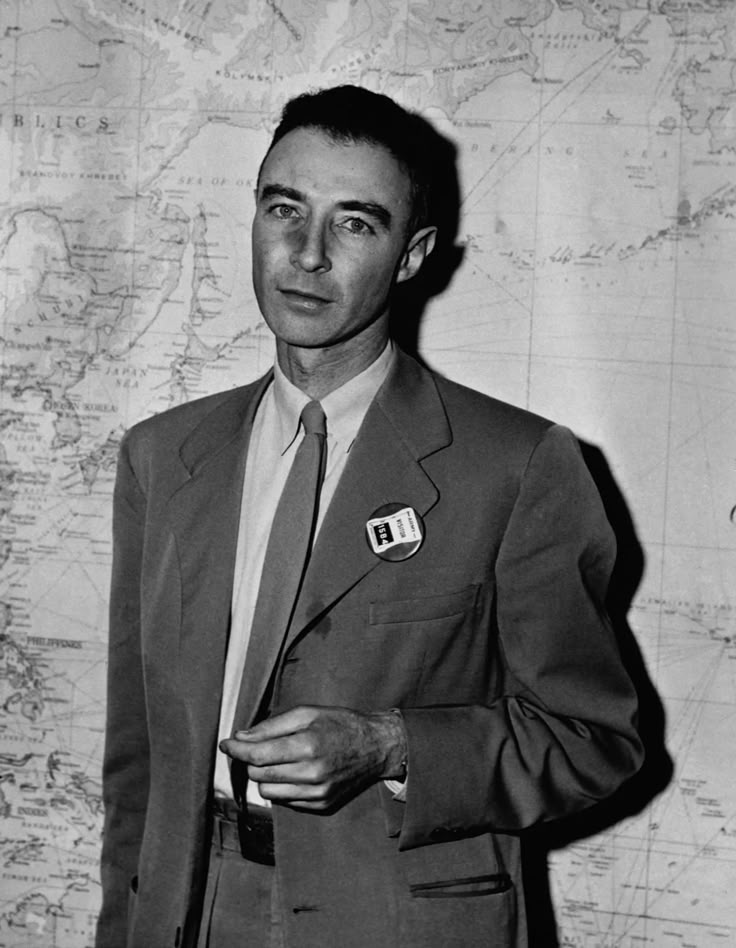

Sumber- Julius Robert Oppenheimer (1904–1967) J. Robert Oppenheimer adalah fisikawan teoretis Amerika yang dikenal sebagai "Bapak Bom Atom" karena perannya dalam Proyek Manhattan, program rahasia AS yang mengembangkan senjata nuklir pertama selama Perang Dunia II.
Nama lengkap: Julius Robert Oppenheimer Lahir: 22 April 1904 di New York, AS
Orang tua: Julius Oppenheimer (pengusaha kaya) dan Ella Friedman (seniman)
Pendidikan: Harvard University (Kimia & Fisika) University of Cambridge (meneliti fisika kuantum) Universitas Göttingen, Jerman (Ph.D. dalam Fisika, 1927) Selama di Göttingen, ia belajar di bawah bimbingan Max Born, salah satu perintis mekanika kuantum.
Setelah menyelesaikan studinya, Oppenheimer mengajar di University of California, Berkeley Tahun 1942, ia ditunjuk sebagai direktur ilmiah Proyek Manhattan, yang bertujuan mengembangkan bom atom untuk AS Bekerja di Laboratorium Los Alamos, New Mexico, bersama ilmuwan top dunia seperti Enrico Fermi, Richard Feynman, dan Edward Teller 16 Juli 1945: Uji coba bom atom pertama, Trinity Test, berhasil dilakukan di gurun New Mexico Saat melihat ledakan pertama bom nuklir, Oppenheimer mengutip ayat dari kitab Bhagavad Gita: "Now I am become Death, the destroyer of worlds." ("Kini aku telah menjadi Kematian, sang penghancur dunia.")
Setelah perang, Oppenheimer menjadi penasihat utama Komisi Energi Atom AS Ia menentang pengembangan bom hidrogen (bom H) yang jauh lebih kuat daripada bom atom Tahun 1954, ia dicap sebagai ancaman keamanan nasional oleh pemerintah AS karena dugaan simpati terhadap komunis (dituduh memiliki hubungan dengan Partai Komunis AS) Dicabut izin keamanannya dalam sidang kontroversial, yang membuatnya kehilangan pengaruh dalam kebijakan nuklir AS
Oppenheimer tetap aktif dalam dunia akademik dan penelitian
Meninggal dunia: 18 Februari 1967 akibat kanker tenggorokan
Tahun 2022, pemerintah AS secara resmi mencabut keputusan yang mencoreng reputasinya, mengakui bahwa Oppenheimer diperlakukan tidak adil Dikenang sebagai ilmuwan jenius yang berkontribusi besar dalam fisika kuantum dan teknologi nuklir Kisahnya menjadi inspirasi banyak buku, film, dan serial dokumenter Pada 2023, kisah hidupnya diangkat dalam film "Oppenheimer" yang disutradarai oleh Christopher Nolan Oppenheimer adalah sosok kompleks—seorang ilmuwan brilian yang menciptakan senjata paling mematikan, tetapi juga seorang humanis yang kemudian menyesali ciptaannya.